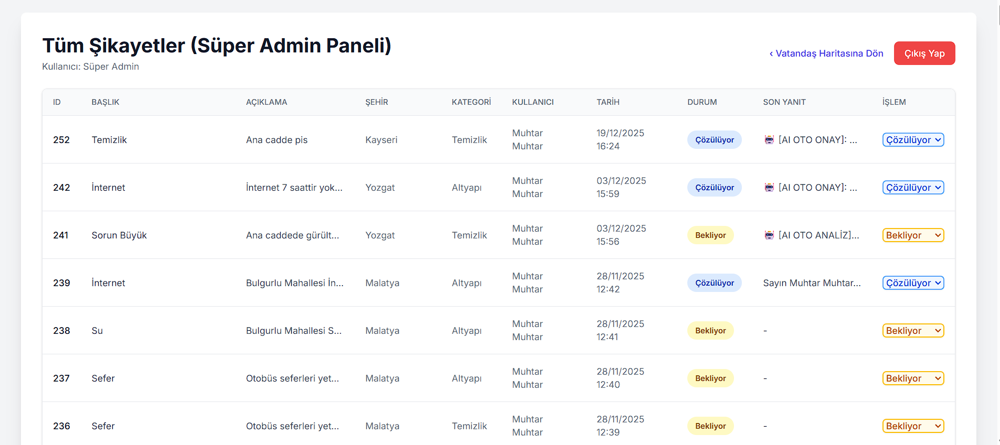
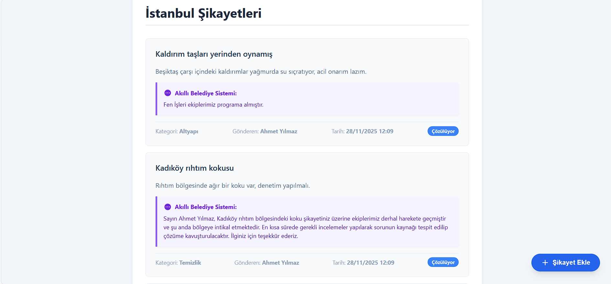
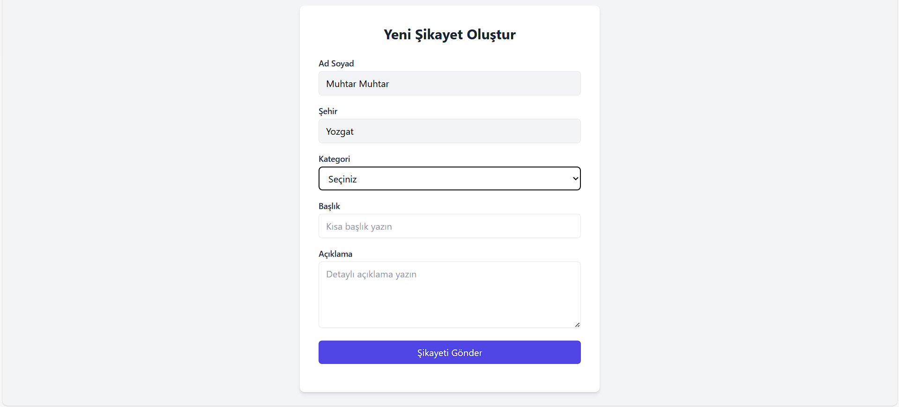
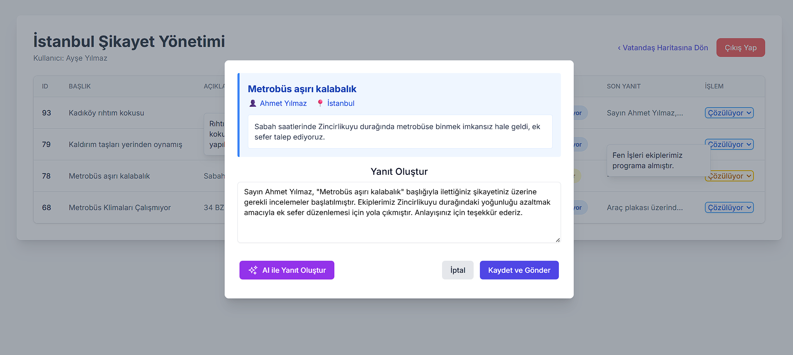
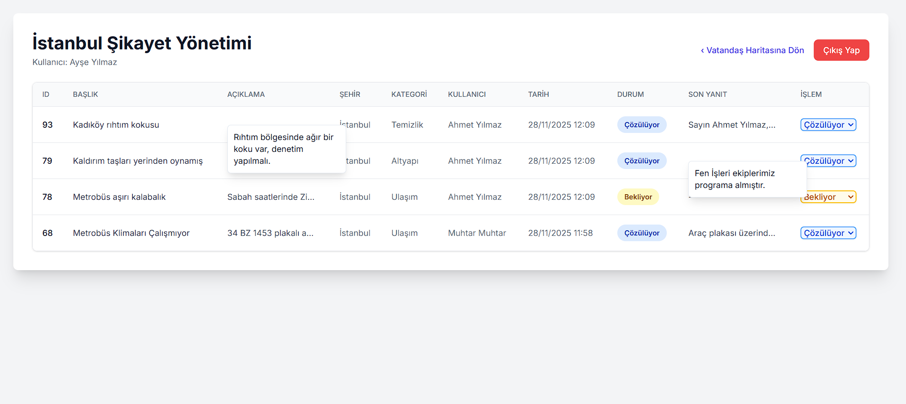
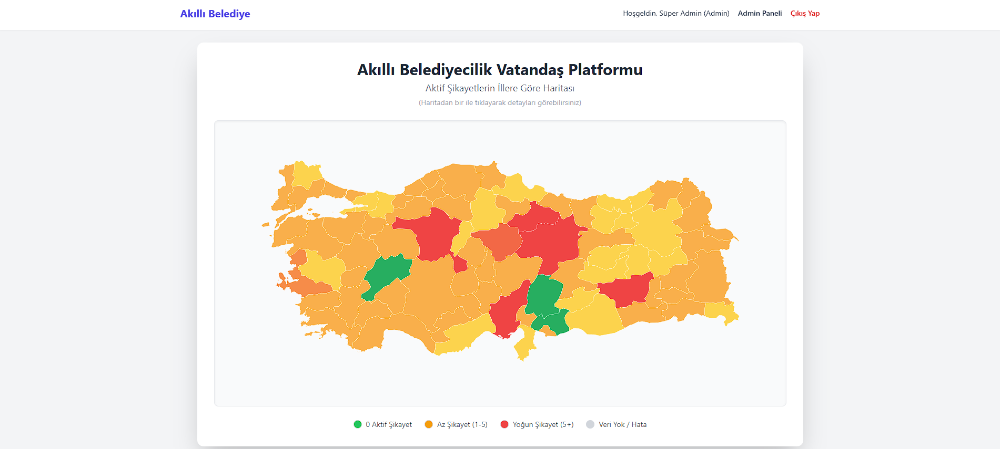

Web ve mobil tabanlı projeler geliştiriyor; bilgi işlem, sistem, ağ ve teknik operasyon süreçlerinde pratik deneyim kazanıyorum.
İnönü Üniversitesi Bilgisayar Mühendisliği lisans mezunuyum. Yazılım geliştirme tarafında web ve mobil projeler üretirken; ALKÜ Bilgi İşlem Birimi’nde Şubat 2026 - Haziran 2026 tarihleri arasında sistem, ağ, donanım ve teknik destek süreçlerinde aktif deneyim kazandım.
Java, Kotlin, Python, HTML, CSS, Firebase Firestore ve PostgreSQL ile projeler geliştiriyorum. Staj sürecimde switch değişimi, sunucu donanımı kurulumu desteği, bilgisayar format/kurulum işlemleri, işletim sistemi/yazılım kurulumu, teknik destek ve saha operasyonlarında görev aldım.
Staj defteri sürecini dijitalleştirmek, hoca/danışman - öğrenci etkileşimini güçlendirmek ve staj sonunda raporlanabilir çıktı üretmek amacıyla geliştirilen web tabanlı sistem.
Web tarafı ana ürün olarak büyük ölçüde tamamlandı. Mobil uygulama tarafının geliştirme süreci devam etmektedir. PDF çıktısı tek öğrenci için veya tüm sınıfı kapsayacak şekilde toplu indirilebilir.
Proje canlı demo olarak yayınlanmaktadır. Demo kullanıcısı, proje inceleme talebi veya kullanım hakkında bilgi almak için WhatsApp üzerinden iletişime geçebilirsiniz.
Gemini AI destekli bu platform, vatandaşların yerel yönetimlere ilettiği şikayetleri Doğal Dil İşleme (NLP) teknikleriyle analiz ederek ilgili birimlere yönlendirmeyi hedefler. FastAPI ve PostgreSQL mimarisi üzerine kurulu sistem; şikayetleri kategorize etme, çözüm önerileri sunma ve belediye yetkililerine veri odaklı analiz imkanı sağlar.






İl bazlı yoğunluk takibi ve veri görselleştirme modülü.
Güncel mezuniyet bilgileriyle hazırlanmış CV dosyamı aşağıdan görüntüleyebilirsiniz.